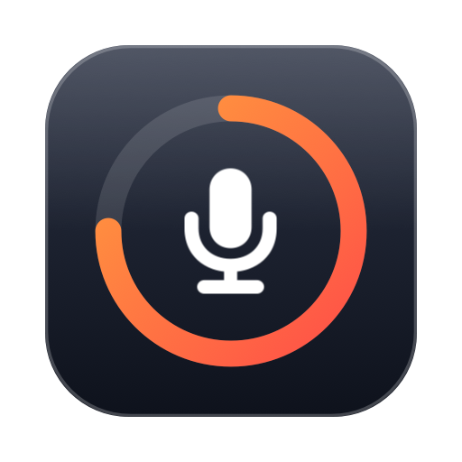

Privacy policy
Last updated: October 9, 2026
Cuewise does not collect, store or share any personal data.
Microphone
Cuewise never opens the microphone, records, listens to or stores audio. It only asks macOS whether an input device is in use and, on macOS 14.4 or later, which app is using it. This information stays on your Mac and is only used to show the alert.
Clipboard and other apps
When you turn on presentation mode, Cuewise may hide other apps and set your clipboard aside. The clipboard contents are kept in your Mac's memory only and are put back when presentation mode ends. Nothing is saved to disk or sent anywhere.
Settings
Your preferences (for example, the alert style or the timer limit) are saved on your Mac with the standard macOS settings system.
No network, no tracking
Cuewise does not connect to the internet. It has no accounts, analytics, advertising or third-party SDKs.
Children
Because Cuewise collects no data, it collects no data from children either.
Changes and contact
If this policy changes, the new version will be published on this page with a new date. Questions: alessi.soncini@gmail.com.
Em português
O Cuewise não coleta, armazena nem compartilha dados pessoais. Ele nunca grava nem escuta o microfone, não se conecta à internet e guarda a área de transferência apenas na memória do Mac durante o modo apresentação, devolvendo-a ao final.